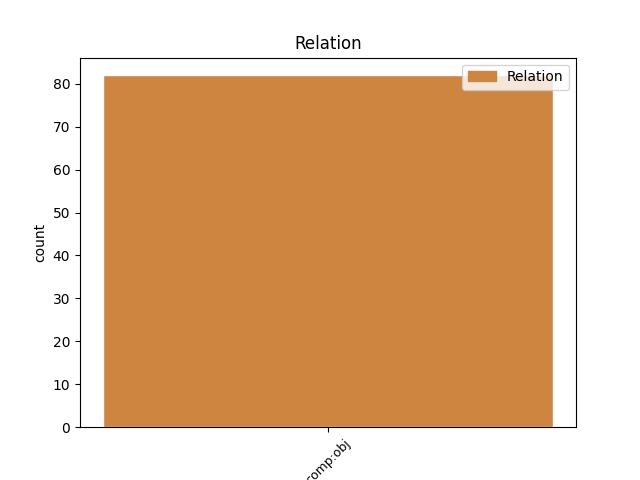
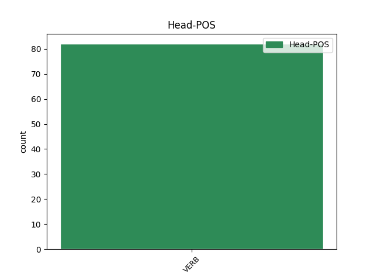
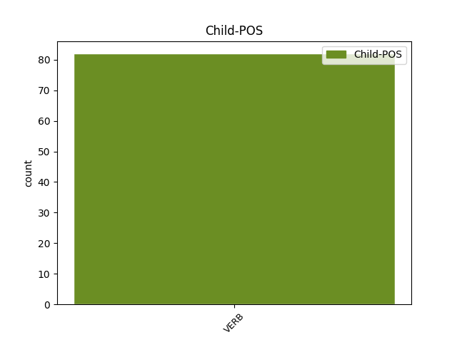

Distribution of features within this leaf



Agreement Rules sorted by frequency.
- When the dependent token is the direct object complements(comp:obj) of the head token, and the dependent token is VERB.
1 awiliudo awiliudon VERB V- Mood=Ind|Number=Sing|Person=1|Tense=Pres|VerbForm=Fin|Voice=Act 0 _ _ _
2 guda _ _ _ _ 0 _ _ _
3 meinamma _ _ _ _ 0 _ _ _
4 þammei _ _ _ _ 0 _ _ _
5 skalkino _ _ _ _ 0 _ _ _
6 fram _ _ _ _ 0 _ _ _
7 fadreinam _ _ _ _ 0 _ _ _
8 in _ _ _ _ 0 _ _ _
9 hrainjai _ _ _ _ 0 _ _ _
10 gahugdai _ _ _ _ 0 _ _ _
11 ƕaiwa _ _ _ _ 0 _ _ _
12 unsweibando _ _ _ _ 0 _ _ _
13 haba haban VERB V- Mood=Ind|Number=Sing|Person=1|Tense=Pres|VerbForm=Fin|Voice=Act 1 comp:obj _ ref=2TIM_1.3
14 bi _ _ _ _ 0 _ _ _
15 þuk _ _ _ _ 0 _ _ _
16 gaminþi _ _ _ _ 0 _ _ _
17 in _ _ _ _ 0 _ _ _
18 bidom _ _ _ _ 0 _ _ _
19 meinaim _ _ _ _ 0 _ _ _
20 naht _ _ _ _ 0 _ _ _
21 jah _ _ _ _ 0 _ _ _
22 daga _ _ _ _ 0 _ _ _
23 gairnjands _ _ _ _ 0 _ _ _
24 þuk _ _ _ _ 0 _ _ _
25 gasaiƕan _ _ _ _ 0 _ _ _
26 gamunands _ _ _ _ 0 _ _ _
27 tagre _ _ _ _ 0 _ _ _
28 þeinaize _ _ _ _ 0 _ _ _
29 ei _ _ _ _ 0 _ _ _
30 fahedais _ _ _ _ 0 _ _ _
31 usfullnau _ _ _ _ 0 _ _ _
32 gamaudein _ _ _ _ 0 _ _ _
33 andnimands _ _ _ _ 0 _ _ _
34 þizos _ _ _ _ 0 _ _ _
35 sei _ _ _ _ 0 _ _ _
36 ist _ _ _ _ 0 _ _ _
37 in _ _ _ _ 0 _ _ _
38 þus _ _ _ _ 0 _ _ _
39 unliutons _ _ _ _ 0 _ _ _
40 galaubeinais _ _ _ _ 0 _ _ _
41 sei _ _ _ _ 0 _ _ _
42 bauaida _ _ _ _ 0 _ _ _
43 faurþis _ _ _ _ 0 _ _ _
44 in _ _ _ _ 0 _ _ _
45 awon _ _ _ _ 0 _ _ _
46 þeinai _ _ _ _ 0 _ _ _
47 Lauidjai _ _ _ _ 0 _ _ _
48 jah _ _ _ _ 0 _ _ _
49 aiþein _ _ _ _ 0 _ _ _
50 þeinai _ _ _ _ 0 _ _ _
51 Aiwneikai _ _ _ _ 0 _ _ _
52 ga-traua _ _ _ _ 0 _ _ _
53 þ _ _ _ _ 0 _ _ _
54 þan _ _ _ _ 0 _ _ _
55 þatei _ _ _ _ 0 _ _ _
56 jah _ _ _ _ 0 _ _ _
57 in _ _ _ _ 0 _ _ _
58 þus _ _ _ _ 0 _ _ _
Disagree Examples:
1 þatei _ _ _ _ 0 _ _ _
2 qiþa qiþan VERB V- Mood=Ind|Number=Sing|Person=1|Tense=Pres|VerbForm=Fin|Voice=Act 6 comp:obj _ ref=MATT_10.27
3 izwis _ _ _ _ 0 _ _ _
4 in _ _ _ _ 0 _ _ _
5 riqiza _ _ _ _ 0 _ _ _
6 qiþaiþ qiþan VERB V- Mood=Opt|Number=Plur|Person=2|Tense=Pres|VerbForm=Fin|Voice=Act 0 _ _ _
7 in _ _ _ _ 0 _ _ _
8 liuhada _ _ _ _ 0 _ _ _
9 jah _ _ _ _ 0 _ _ _
10 þatei _ _ _ _ 0 _ _ _
11 in _ _ _ _ 0 _ _ _
12 auso _ _ _ _ 0 _ _ _
13 gahauseiþ _ _ _ _ 0 _ _ _
14 merjaiþ _ _ _ _ 0 _ _ _
15 ana _ _ _ _ 0 _ _ _
16 hrotam _ _ _ _ 0 _ _ _
1 niu _ _ _ _ 0 _ _ _
2 hauseis hausjan VERB V- Mood=Ind|Number=Sing|Person=2|Tense=Pres|VerbForm=Fin|Voice=Act 0 _ _ _
3 ƕan _ _ _ _ 0 _ _ _
4 filu _ _ _ _ 0 _ _ _
5 ana _ _ _ _ 0 _ _ _
6 þuk _ _ _ _ 0 _ _ _
7 weitwodjand weitwodjan VERB V- Mood=Ind|Number=Plur|Person=3|Tense=Pres|VerbForm=Fin|Voice=Act 2 comp:obj _ ref=MATT_27.13
1 let _ _ _ _ 0 _ _ _
2 ei _ _ _ _ 0 _ _ _
3 saiƕam saiƕan VERB V- Mood=Ind|Number=Plur|Person=1|Tense=Pres|VerbForm=Fin|Voice=Act 0 _ _ _
4 qimai qiman VERB V- Mood=Opt|Number=Sing|Person=3|Tense=Pres|VerbForm=Fin|Voice=Act 3 comp:obj _ ref=MATT_27.49
5 u _ _ _ _ 0 _ _ _
6 Helias _ _ _ _ 0 _ _ _
7 nasjan _ _ _ _ 0 _ _ _
8 ina _ _ _ _ 0 _ _ _
1 ak _ _ _ _ 0 _ _ _
2 gagg _ _ _ _ 0 _ _ _
3 þuk _ _ _ _ 0 _ _ _
4 silban _ _ _ _ 0 _ _ _
5 ataugjan _ _ _ _ 0 _ _ _
6 gudjin _ _ _ _ 0 _ _ _
7 jah _ _ _ _ 0 _ _ _
8 atbair at-bairan VERB V- Mood=Imp|Number=Sing|Person=2|Tense=Pres|VerbForm=Fin|Voice=Act 0 _ _ _
9 fram _ _ _ _ 0 _ _ _
10 gahraineinai _ _ _ _ 0 _ _ _
11 þeinai _ _ _ _ 0 _ _ _
12 þatei _ _ _ _ 0 _ _ _
13 anabauþ ana-biudan VERB V- Mood=Ind|Number=Sing|Person=3|Tense=Past|VerbForm=Fin|Voice=Act 8 comp:obj _ ref=MARK_1.44
14 Moses _ _ _ _ 0 _ _ _
15 du _ _ _ _ 0 _ _ _
16 weitwodiþai _ _ _ _ 0 _ _ _
17 im _ _ _ _ 0 _ _ _
1 niu _ _ _ _ 0 _ _ _
2 ussuggwuþ us-siggwan VERB V- Mood=Ind|Number=Plur|Person=2|Tense=Past|VerbForm=Fin|Voice=Act 0 _ _ _
3 aiw _ _ _ _ 0 _ _ _
4 ƕa _ _ _ _ 0 _ _ _
5 gatawida ga-taujan VERB V- Mood=Ind|Number=Sing|Person=3|Tense=Past|VerbForm=Fin|Voice=Act 2 comp:obj _ ref=MARK_2.25
6 Daweid _ _ _ _ 0 _ _ _
7 þan _ _ _ _ 0 _ _ _
8 þaurfta _ _ _ _ 0 _ _ _
9 jah _ _ _ _ 0 _ _ _
10 gredags _ _ _ _ 0 _ _ _
11 was _ _ _ _ 0 _ _ _
12 is _ _ _ _ 0 _ _ _
13 jah _ _ _ _ 0 _ _ _
14 þai _ _ _ _ 0 _ _ _
15 miþ _ _ _ _ 0 _ _ _
16 imma _ _ _ _ 0 _ _ _